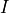

Numerical solution with C#
Warning
This is an educational project and not intended for production use. Code is not optimized and not automatized. The goal is to provide a simple and clear implementation of beam theory in C# for educational purposes. The code is not intended to be used in production or for any real-world applications. It is a simplified version of beam theory and does not include all the necessary features and optimizations for a production-level implementation.
Tip
You can find a detailed description and a working example in the simply-supported-beam-edu repository here.
From beam theory to an algebraic system of equations
Given the approprieate boundary conditions, the beam theory can be reduced to a system of equations. The system of equations is then solved using a linear solver. For instance:
int numRows = 12; // define rows of the matrix
int numCols = 12; // define columns of the matrix
// v(0) = 0
double[] row1 = { 0, 0, 0, 1/(E*I), 0, 0, 0, 0, 0, 0, 0, 0 };
// w(0) = 0
double[] row2 = {0, 0, 0, 0, 0, -1/(E*A), 0, 0, 0, 0, 0, 0 };
// M(0) = 0
double[] row3 = { 0, -1, 0, 0, 0, 0, 0, 0, 0, 0, 0, 0 };
// v(zF_s0) = 0
double[] row4 = { 1/(E*I)*Math.Pow(zF_s0,3)/6, 1/(E*I)*Math.Pow(zF_s0,2)/2, 1/(E*I)*zF_s0, 1/(E*I), 0, 0, 0, 0, 0, 0, 0, 0 };
// Delta_w() = w_s1(0) - w_s0(zF_s0) = 0
double[] row5 = { 0, 0, 0, 0, -(-1/(E*A)) *zF_s0, -(-1/(E*A)), 0, 0, 0, 0, 0, -1/(E*A) };
// Delta_phi() = phi_s1(0) - phi_s0(zF_s0) = 0
double[] row6 = { (1/(E*I))*Math.Pow(zF_s0,2)/2, (1/(E*I))*zF_s0, (1/(E*I)), 0, 0, 0, 0, 0, -1/(E*I), 0, 0, 0 };
// Delta_v() = v_s1(0) - v_s0(zF_s0) = 0
double[] row7 = {-(1/(E*I))*Math.Pow(zF_s0,3)/6, -(1/(E*I))*Math.Pow(zF_s0,2)/2, -(1/(E*I))*zF_s0, -(1/(E*I)), 0, 0, 0, 0, 0, 1/(E*I), 0, 0 };
// Delta_M() = M_s1(0) - M_s0(zF_s0) = 0
double[] row8 = { -(-zF_s0), -(-1), 0, 0, 0, 0, 0, -1, 0, 0, 0, 0 };
// Delta_N() = N_s1(0) - N_s0(zF_s0) = 0
double[] row9 = { 0, 0, 0, 0, -(-1), 0, 0, 0, 0, 0, -1, 0 };
// M(zF_s1) = 0
double[] row10 = {0, 0, 0, 0, 0, 0, -zF_s1, -1, 0, 0, 0, 0 };
// T(zF_s1) = 0
double[] row11 = {0, 0, 0, 0, 0, 0, -1, 0, 0, 0, 0, 0 };
// N(zF_s1) = 0
double[] row12 = {0, 0, 0, 0, 0, 0, 0, 0, 0, 0, -1, 0 };
// Set rows collection for the matrix
List<double[]> rows = new List<double[]>
{
row1, row2, row3, row4, row5, row6, row7, row8, row9, row10, row11, row12
};
// define the vector
double[] vector = new double[]
{
0, 0, 0, 0, 0, 0, 0, 0, 0, 0, force, 0
};
// reshape the matrix from [][] to [,]
double[,] matrix = new double[numRows, numCols];
for (int i = 0; i < rows.Count; i++)
{
for (int j = 0; j < rows[i].Length; j++)
{
matrix[i, j] = rows[i][j];
}
}
Linear solve in C#
double[] solution = MatrixSolver.Solve(matrix, vector);
Plot solution
public static void PlotBeamFunction(List<ResultsGroup> groups)
{
ScottPlot.Multiplot multiplot = new(); // start a new multiplot
double dx = 0.1; // resolution of the plot
ScottPlot.Plot displacement = PlotDisplacement( groups, dx); // prepare the displacement plot
ScottPlot.Plot N = PlotN( groups, dx); // prepare the axial force plot
ScottPlot.Plot T = PlotT( groups, dx); // prepare the shear force plot
ScottPlot.Plot M = PlotM( groups, dx); // prepare the bending moment plot
multiplot.AddPlot(displacement); // add the displacement plot to the multiplot
multiplot.AddPlot(N); // add the axial force plot to the multiplot
multiplot.AddPlot(T); // add the shear force plot to the multiplot
multiplot.AddPlot(M); // add the bending moment plot to the multiplot
// string imagePath = "plot.png"; // path to save the image
var baseDirectory = Directory.GetParent(AppDomain.CurrentDomain.BaseDirectory);
if (baseDirectory == null || baseDirectory.Parent == null || baseDirectory.Parent.Parent == null)
{
throw new InvalidOperationException("Unable to determine the project root directory.");
}
string projectRoot = baseDirectory.Parent.Parent.FullName;
string imagePath = Path.Combine(projectRoot, "plot.png");
multiplot.SavePng(imagePath, 600, 1200); // save the image
OpenImage(imagePath); // open the image
}
Overview
This project implements a two-segment beam model with a hinge at the left end, a roller support at an intermediate point, and a concentrated load applied at the same point as the roller. It calculates symbolic solutions and visualizes results using a 2D plot.
It is intended for educational purposes, especially to complement AR-based simulations in Unity.

Mathematical Model
The beam behavior is modeled with the Euler-Bernoulli beam equation:
- where:
 is Young’s modulus,
is Young’s modulus, is the moment of inertia,
is the transverse displacement,
is the distributed load (in this case, a point force).
Files and Structure
main.cs: Entry point and configuration.
Solver.cs: Solves the beam equations symbolically for each segment.
Plotter.cs: Uses ScottPlot to visualize results.
How to Run
Ensure [.NET SDK](https://dotnet.microsoft.com/en-us/download) is installed.
Open terminal in the project directory and run:
dotnet restore dotnet build dotnet run
The output will be displayed both as console output and a plot image (plot.png).
Example Output:
Solution found!
Segment 1 from z: 0 to z: 5, coefficients: c1 = 8.00E+002, ...
Segment 2 from z: 5 to z: 10, coefficients: c1 = -8.00E+002, ...

Code Documentation
Main.cs
// Entry point to the application.
// Defines beam parameters (E, I, A), length, load, and support positions.
// Calls the Solver to compute the coefficients and then plots the results.
- Key Parameters:
E, I, A: Material and geometric properties.
length: Total length of the beam.
force: Applied load value.
ratio: Normalized position of roller and load (0 < ratio < 1).
Solver.cs
public class Solver
{
public Solver(float E, float I, float A, float force, float length, float ratio)
}
Responsibilities:
Computes constants of integration for each beam segment.
Solves the system of equations derived from continuity, boundary conditions, and applied load.
Outputs segment coefficients grouped as [c1, c2, …, c6].
Important Methods:
Solve(): Solves the symbolic equations for beam deflection.
GetSolutionSegments(): Returns evaluated solutions for each segment.
Plotter.cs
public static class Plotter
{
public static void Plot(Solver solver, float zStep = 0.1f)
}
Dependencies
.NET 6.0or laterUnity (optional, for AR visualization)